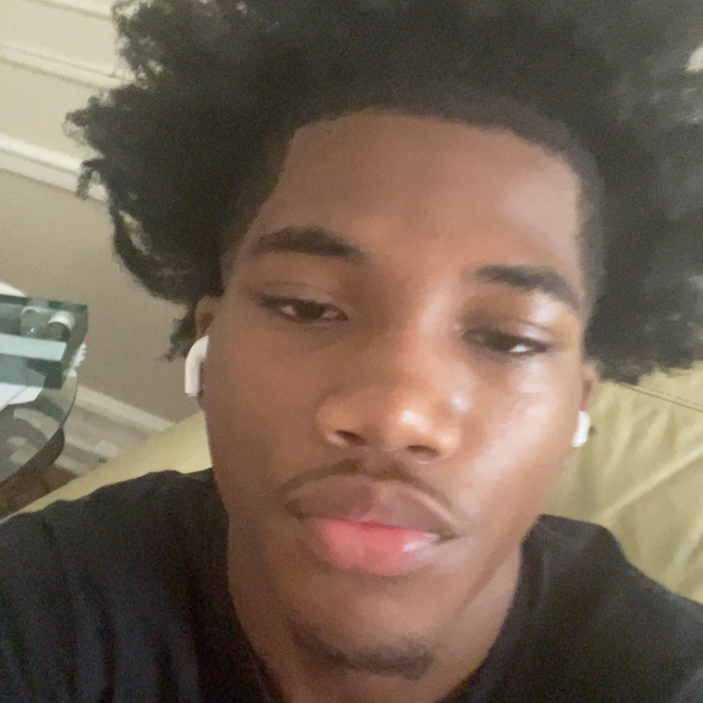

About me

My name is Bryant Williams and I am an aspiring software engineer.I am a also a full time High School Senior who attends Science Skills Center High School and the Brooklyn Steam Center in the CSIT pathway.
One may ask how has I ended up in a position where I am fully intrigued in learning the ins and out of programs and to that I simply don't know. My whole life I have been ina chase to try and figuring things out in a way in which would benefit me and I feel like Full Stack Devlopment is a challenge that I am willing to take on. Some of my hobbies include playing the saxophone,playing basketball, and mostly reading books.I am really invested in trying to become a better person day by day and I feel like Full Stack Devolpment is a start.